Создание игр в Roblox Studio
Создание и настройка простых эффектов. Знакомство с источниками освещения. Окно Toolbox
Сегодня мы научимся создавать и настраивать простые эффекты и источники освещения. Узнаем, что такое Toolbox.
Создание и настройка эффектов
Ранее мы уже косвенно затрагивали создание эффектов, но теперь мы рассмотрим их более детально, а также рассмотрим создание эффектов освещения и разберемся с их настройками.
Для изучения эффектов нам понадобится создать 4 детали, к которым они и будут применяться.
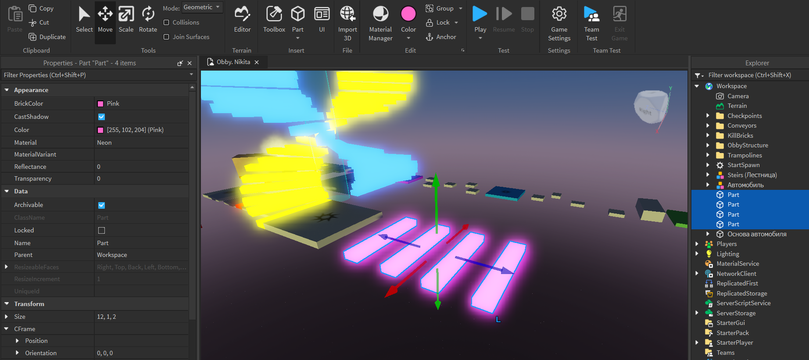Изучаем эффект дыма - Smoke
Начать изучение эффектов удобно с дыма.
Добавим этот эффект на первую платформу одним из двух способов: через Explorer или через кнопку Effects во вкладке Model
После добавления дыма выберите эффект в окне Explorer (он будет дочерним относительно выбранной детали) чтобы посмотреть и изменить его настройки в окне Properties.
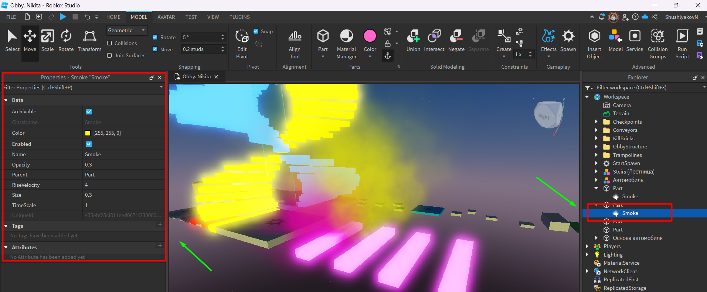У этого эффекта тоже есть 4 настройки:
- Color - изменяет цвет дыма.
- Opacity - плотность(непрозрачность) дыма. Значение 1 сделает дым настолько плотным, что через него невозможно будет увидеть окружение.
- RiseVelocity- скорость рассеивания дыма. Если установить высокие настройки, можно увидеть систему частиц, которая генерирует этот эффект.
- Size - диаметр распространения дыма.
Изучаем эффект огня - Fire
Теперь научимся создавать эффект огня. Особенно круто он выглядит на чекпоинтах!
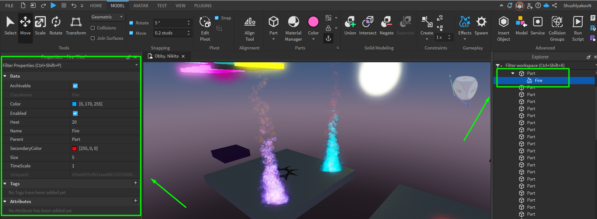У огня тоже есть настройки:
- Color - общий цвет дыма.
- Heat - аналог RiseVelocity, он показывает, насколько быстро и высоко будет гореть пламя.
- SecondaryColor - второй цвет огня, который можно увидеть в центре и на языках пламени.
- Size - размер эффекта. Желательно не устанавливать чересчур высокие значения, чтобы не создавать непроходимые платформы.
Как устроены эффекты? Эффекты Sparkles / Particle Emitter
Все эффекты построены на основе систем части (Particle System). На самом деле это просто маленькие картинки, которые генерируются и рассеиваются определённым образом.
Остальные эффекты, кроме света, требуют более сложной настройки.
Изучаем источники света
Перейдем к изучению источников света. В Roblox Studio помимо глобального источника освещения, с которым мы поработали в прошлом занятии, есть и локальные источники света, работающие также по принципу эффектов - они должны быть обязательно определены на какой-то физический объект.
Базовый свет - PointLight
В первую очередь поработаем с базовым светом PointLight, для этого создадим сферу и добавим к ней одноименный эффект - PointLight:
Этот источник света представляет из себя просто точку, которая испускает свет одновременно во всех направлениях. Используется для создания пассивного базового освещения сцены
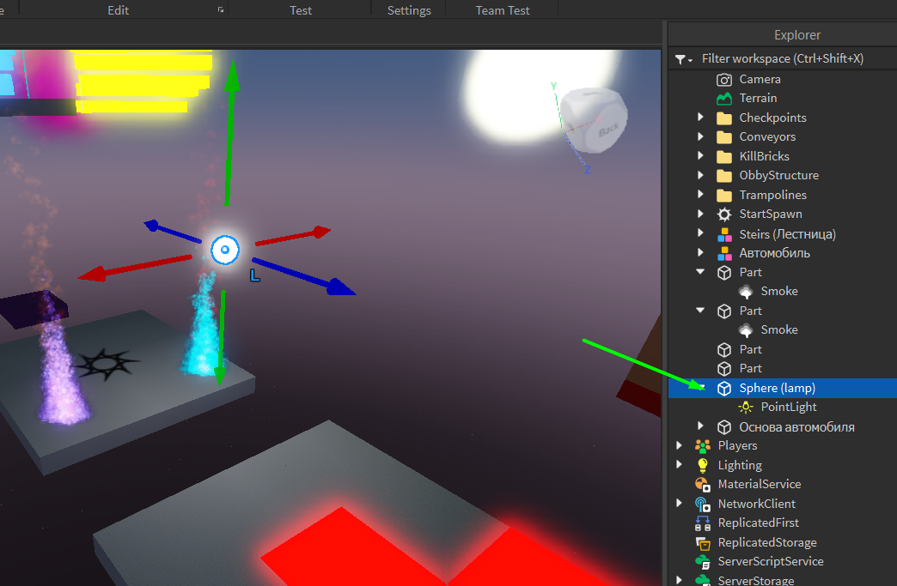Когда у вас выбран источник освещения, вы можете видеть вокруг него зону его действия. У PointLight это сфера, у SpotLight - конус, а у SurfaceLight - прямоугольник.
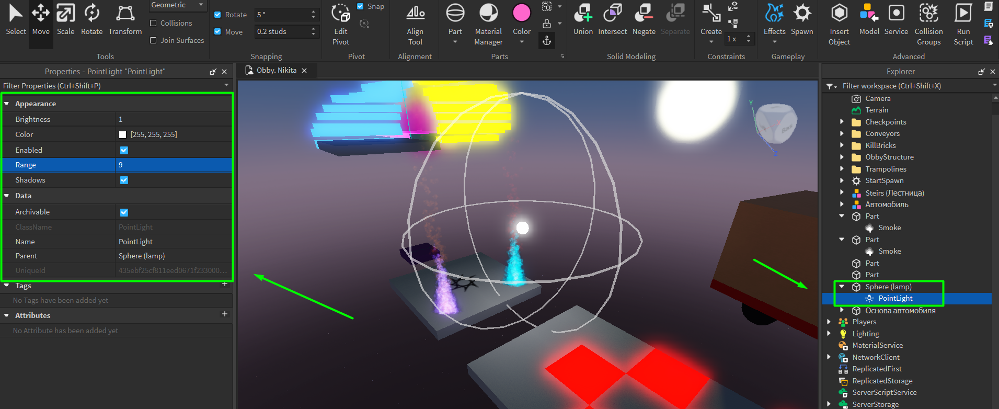У света тоже есть настройки. Чтобы их редактировать, нажмем на источник света нашего объекта (сферы). В Properties увидим параметры:
- Range - размер освещения.
- Brightness - яркость освещения.
- Color - цвет освещения.
- Shadows - отбрасывает ли свет тени.
Направленный свет - SpotLight
Следующий источник света - SpotLight - это прожекторный свет. В отличие от PointLight, он светит не во всех направлениях, а только в определенном направлении, как фонарик - в форме конуса.
SpotLight необходимо определять на одну из сторон детали - для этого в окне Properties изменить значение параметра Face, пока не выберется правильно сторона объекта.
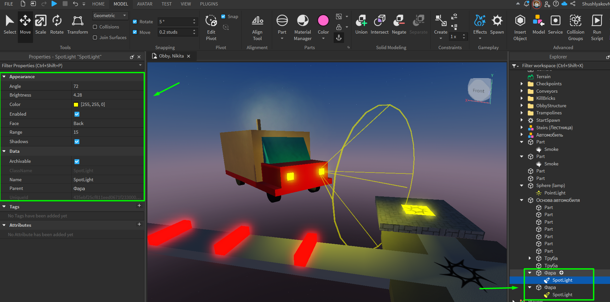Помимо изученных параметров, у SpotLight есть ещё Angle - определяет угол конуса, делая его шире или уже.
Прямоугольный свет - SurfaceLight
Последний источник освещения - SurfaceLight. Он определяется на одну из сторон детали и превращает её в один цельный прямоугольный источник освещения. В отличие от предыдущих источников света, он светит ие из точки, а из определенной плоскости.
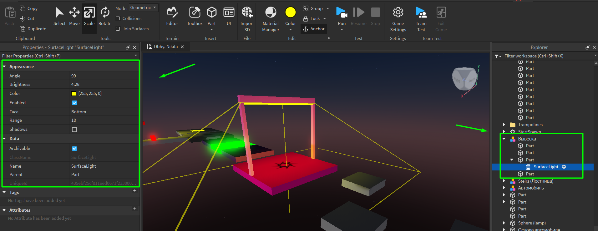Этот вид света незаменим для создания атмосферного освещения областей карты, имитации неточечных ламп (например, газоразрядных или светодиодных лент) и работы с большими объемами пространства.
Набор настроек схож с предыдущими объектами.
Изучение окна Toolbox
Следующая часть занятия будет связана с изучением окна Toolbox. Это окно можно включить нажатием на одноименную кнопку в верхнем меню.
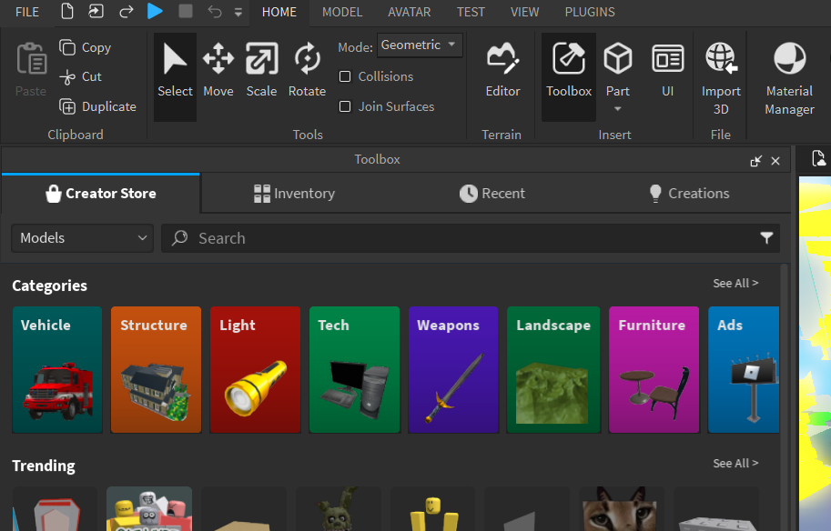Для чего используется окно Toolbox?
Toolbox - это окно, в котором зы можете найти заранее созданные другими разработчиками объекты (ассеты - assets) и использовать из в своей игре.
При работе с Тулбоксом важно помнить, что помимо по-настоящему отличных объектов, в нем находится огромное количество некачественных или даже сломанных моделей, объектов и скриптов, которые могу сломать нашу игру.
Чтобы точно найти подходящие качественные ассеты, ищите объекты со значком качества.
Практика!
Работу с Toolbox нужно закрепить на практике. Создадим финальную платформу, на которую должны попасть игроки в конце своего уровня с использованием заготовленных предметов из Toolbox!
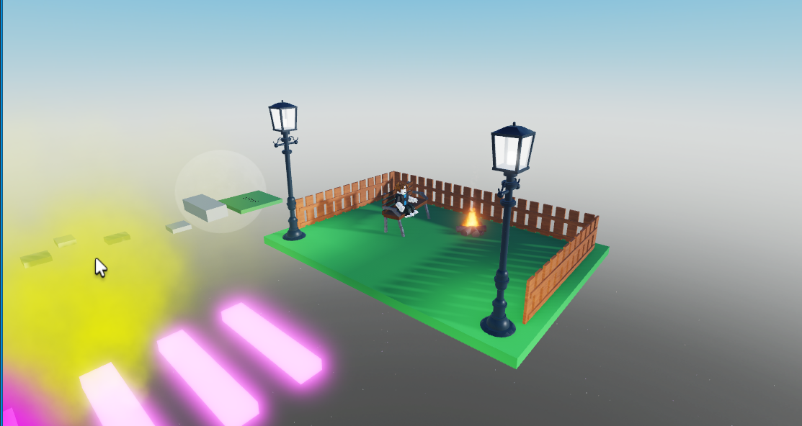А скрипты в Toolbox можно найти?
Да, можно! В Toolbox есть не только готовые модели, но и скрипты. Например, есть несколько скриптов с префиксом "Coddy_", найдем их при помощи поиска.
Нам понадобятся скрипты:
- Coddy_RotatePart - вращает деталь вокруг своей оси.
- Coddy_MovePart - перемещает деталь вверх и вниз.
- Coddy_ColorRandom - постоянно меняет цвет детали на случайный.
Чтобы добавить скрипт, кликните по нему и его копия появится в Explorer. Далее скрипт необходимо переместить на необходимый объект.
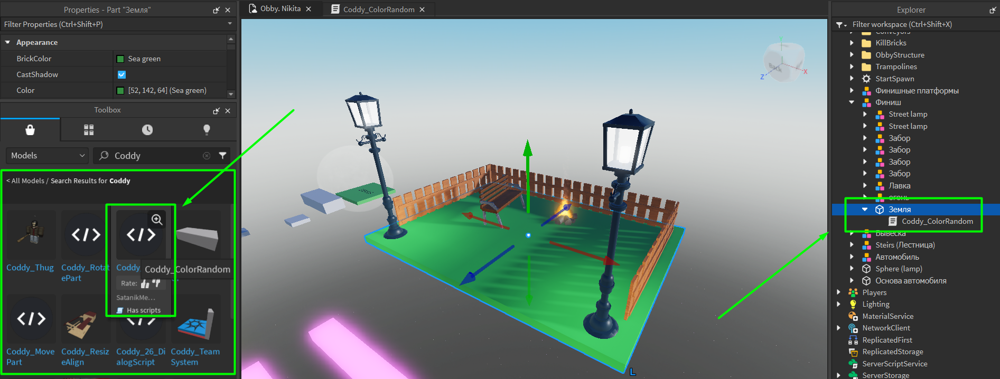Каждый скрипт уже написан и настроен, но если нам надо его корректировать, то можем открыть код скрипта нажатием на него. Внутри скрипта можно поменять значения переменных на нужные (внимательно читаем комментарии рядом с кодом). Пример скрипта Coddy_ColorRandom:
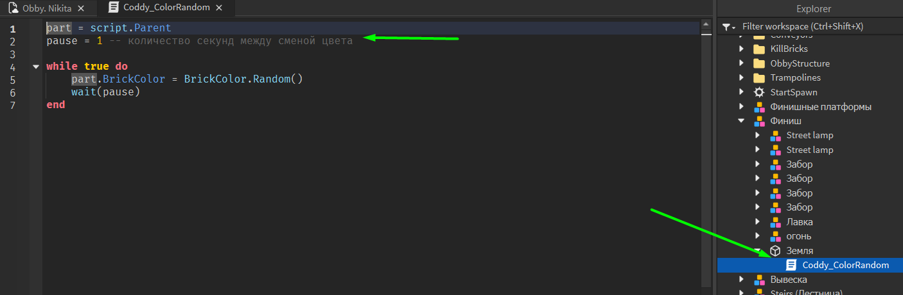Публикация игры!
После того, как игра готова, её можно опубликовать, чтобы другие пользователи и игроки Roblox смогли найти её и сыграть. Для этого нужно открыть окно "FILE", и нажать на "Publish to Roblox":
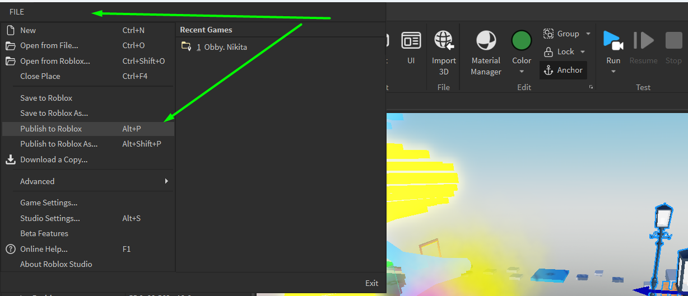После публикации игра доступна только разработчику. Чтобы сделать её доступной для других игроков снова нужно нажать на "FILE" -> "Game Settings" -> "Permissions" (Разрешения). Установим параметр "Playability" на "Public":
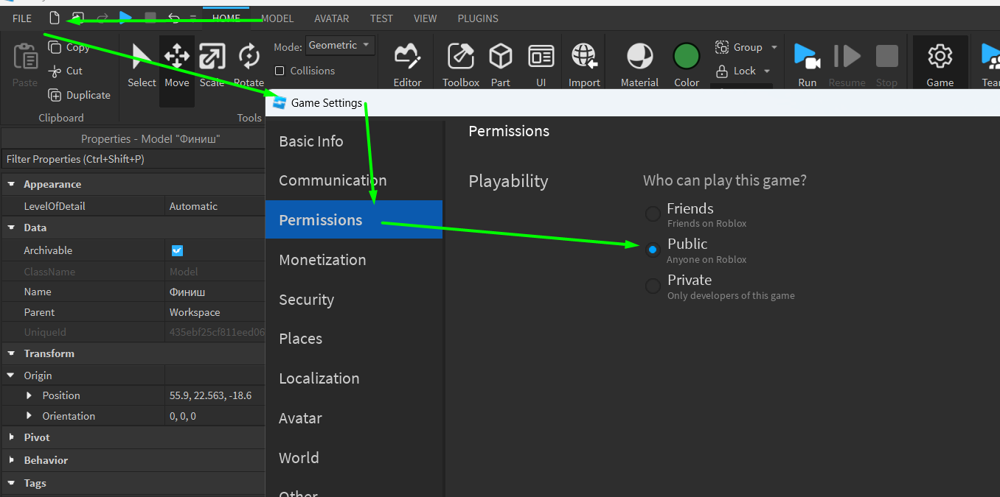Готово! Теперь нашу игру можно найти на сайте Roblox.com и поиграть в неё любому желающему!
Домашкаа 😁
Первый модуль подходит к концу. Но это крутая новость! Значит мы получили первые знания о разработке игр в Roblox Studio! Впереди ещё кууча интересного и полезного!
Мы с тобой проделали большую работу и можно немного расслабиться... Но чтобы ничего не забыть ответь, пожалуйста, на несколько легких вопросиков:
- Roblox Studio - это игровой движок. Что такое игровой движок?
- Деталь компьютера
- Профессия
- Программа с множеством инструментов для создания игр
- Какие инструменты нужны для манипулированием объектом?
- Что такое Anchor и зачем он нужен?
- Блокирует объект и запрещает изменять его параметры
- Отключает падение (добавляет "якорь")
- Делает объект невидимым
- Что такое родительский элемент?
- Объект, имеющий зависящие от него объекты
- Объект, который создает другие объекты
- Объект, который делает завтрак по утрам
- Что делает окно Explorer?
- Настраивает родительско-дочерние отношения
- Показывает все объекты в игре
- Позволяет выбрать любой объект
- Все варианты верны
- Для чего нужна группировка объектов?
- Как называется окно для просмотра свойств объектов?
- Select
- Properties
- Toolbox
- Можно ли настроить персонажа?
- Какие бывают источники света?
- Что такое Toolbox и зачем он нужен?